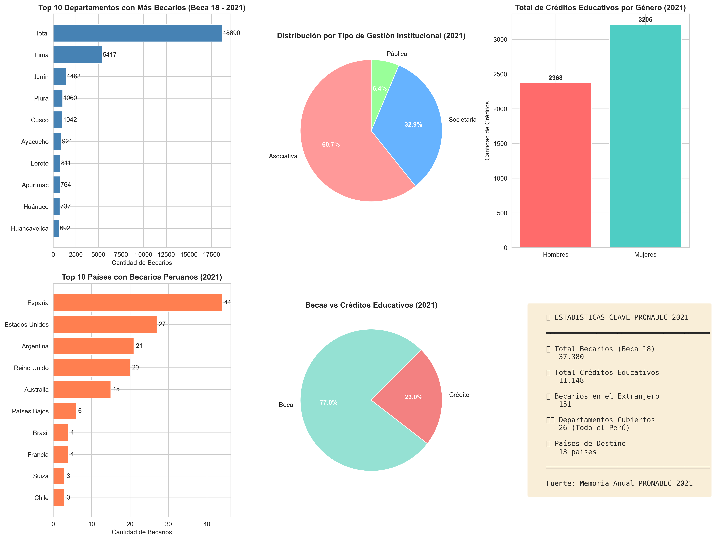

📊 REPORTE PRONABEC 2021
Análisis de Becas y Créditos Educativos en Perú
📚 Becarios Beca 18
37,380
💳 Créditos Educativos
11,148
🌍 Becarios al Extranjero
151
🗺️ Top 10 Departamentos con Más Becarios
| # |
Departamento |
Cantidad de Becarios |
Porcentaje |
| 26 |
Total |
18,690 |
100.0% |
| 15 |
Lima |
5,417 |
28.98% |
| 12 |
Junín |
1,463 |
7.83% |
| 20 |
Piura |
1,060 |
5.67% |
| 8 |
Cusco |
1,042 |
5.58% |
| 5 |
Ayacucho |
921 |
4.93% |
| 16 |
Loreto |
811 |
4.34% |
| 3 |
Apurímac |
764 |
4.09% |
| 10 |
Huánuco |
737 |
3.94% |
| 9 |
Huancavelica |
692 |
3.7% |
🏫 Distribución por Tipo de Gestión
| Tipo de Gestión |
Cantidad de Becarios |
Porcentaje |
| Asociativa |
3,034 |
60.7% |
| Societaria |
1,644 |
32.9% |
| Pública |
318 |
6.4% |
🌎 Top 10 Países de Destino
| # |
País |
Cantidad de Becarios |
| 1 |
España |
44 |
| 2 |
Estados Unidos |
27 |
| 3 |
Argentina |
21 |
| 4 |
Reino Unido |
20 |
| 5 |
Australia |
15 |
| 6 |
Países Bajos |
6 |
| 7 |
Brasil |
4 |
| 8 |
Francia |
4 |
| 9 |
Suiza |
3 |
| 10 |
Chile |
3 |
👥 Distribución por Género (Créditos Educativos)
| Género |
Cantidad de Créditos |
Porcentaje |
| Hombres |
2,368 |
42.5% |
| Mujeres |
3,206 |
57.5% |
📈 Visualización General
